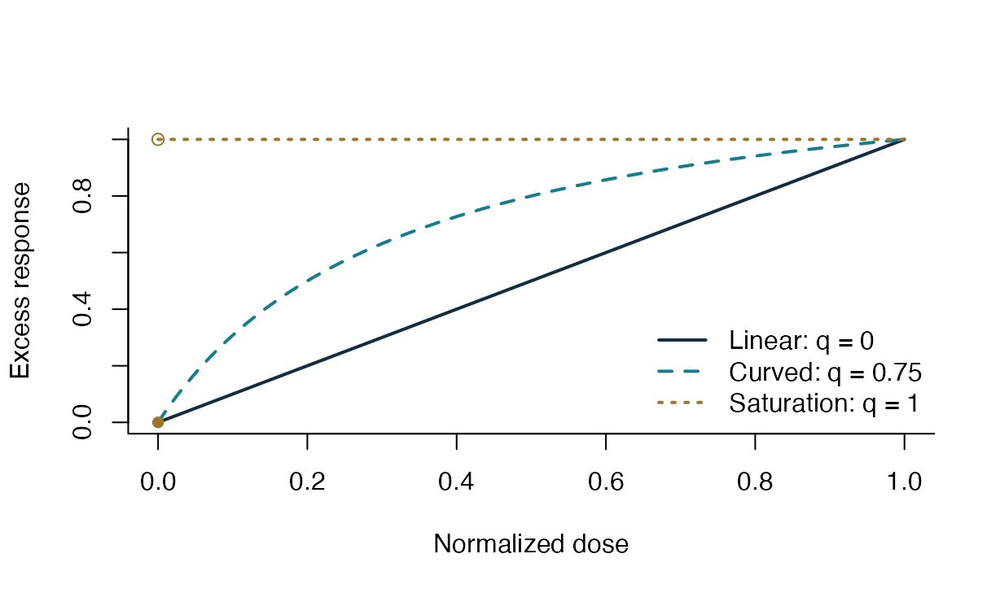
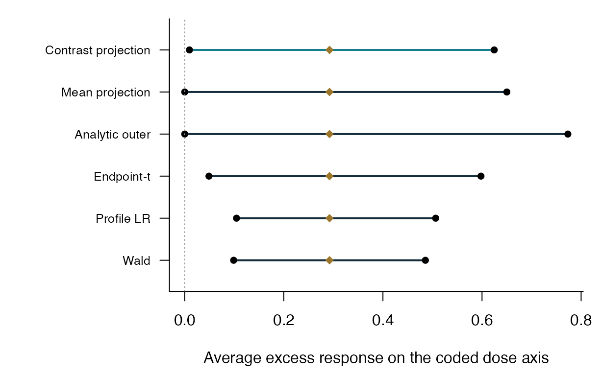

Shapes in the closed model
This is a deterministic mathematical illustration with baseline zero and endpoint excess response one. It is not an estimated response or a simulation result. The axes have normalized dose and response units.
x <- seq(0, 1, length.out = 201)
q <- c(0, 0.75, 1)
curves <- sapply(q[1:2], function(shape) emax_response(x, 0, 1, shape, D = 1))
matplot(x, curves, type = "l", lty = c(1, 2), lwd = 2,
col = c("#142C3B", "#167D8D"),
xlab = "Normalized dose", ylab = "Excess response", bty = "l")
segments(0, 1, 1, 1, lty = 3, lwd = 2, col = "#9C772B")
points(0, 1, pch = 1, col = "#9C772B")
points(0, 0, pch = 16, col = "#9C772B")
legend("bottomright", c("Linear: q = 0", "Curved: q = 0.75", "Saturation: q = 1"),
lty = c(1, 2, 3), lwd = 2, col = c("#142C3B", "#167D8D", "#9C772B"), bty = "n")
Illustration: linear, curved, and immediate-saturation shapes. The saturation baseline remains zero.
Reported clinical intervals
The following values are the saved six-method interval results for
the DoseFinding::IBScovars example (package version 1.4-1),
based on all 369 released observations. This display reuses the
completed results; it does not fit benchmark methods. The coded dose
axis is 0 to 4 with an illustrative equal-spacing convention. The
intervals concern that coded-axis target, not an integral over
unreleased physical dose levels.
path <- system.file("extdata", "clinical_intervals.tsv", package = "emaxProjection")
intervals <- read.delim(path)
knitr::kable(intervals[c("label", "lower", "upper")], digits = 6,
col.names = c("Method", "Lower", "Upper"))| Method | Lower | Upper |
|---|---|---|
| Contrast projection | 0.009510 | 0.624582 |
| Mean projection | 0.000000 | 0.650056 |
| Analytic outer | 0.000000 | 0.773220 |
| Endpoint-t | 0.048910 | 0.597864 |
| Profile LR | 0.104479 | 0.506510 |
| Wald | 0.098736 | 0.485693 |
old_par <- par(mar = c(4.5, 9, 1, 1))
order <- rev(seq_len(nrow(intervals)))
plot(NA, xlim = range(c(0, intervals$lower, intervals$upper)),
ylim = c(0.5, nrow(intervals) + 0.5), yaxt = "n", bty = "l",
xlab = "Average excess response on the coded dose axis", ylab = "")
axis(2, at = order, labels = intervals$label, las = 1, cex.axis = 0.8)
segments(intervals$lower, order, intervals$upper, order,
col = c("#167D8D", rep("#142C3B", nrow(intervals) - 1)), lwd = 2)
points(intervals$lower, order, pch = 16)
points(intervals$upper, order, pch = 16)
points(intervals$estimate, order, pch = 18, col = "#9C772B", cex = 1.2)
abline(v = 0, lty = 3, col = "grey60")
Reported code-axis intervals from the completed clinical analysis. The common point estimate is shown as a diamond.
par(old_par)The different methods have different guarantees and availability
conditions; shorter width alone is not evidence of superiority. The
centered interval’s outer bounds are approximately
[0.009510, 0.624582] with the recorded absolute endpoint
tolerance of 0.001.
Reproduce the primary interval from aggregate summaries
summary_path <- system.file("extdata", "clinical_dose_summary.tsv", package = "emaxProjection")
summary <- read.delim(summary_path)
variance <- sum((summary$n - 1) * summary$sd^2) / (sum(summary$n) - nrow(summary))
region <- emax_region_from_summary(summary$dose, summary$n, summary$mean,
pooled_variance = variance, D = 4, calibration = "contrast")
clinical_result <- emax_project(region)
clinical_result
#> Integrated Emax response | contrast calibration
#> Status: nonempty; termination: endpoint_tolerance
#> Outer interval: [0.00950952, 0.624582]
#> Endpoint gaps: 0.000507594, 0.000933858; converged: TRUE
#> Ordinary double precision; no directed-rounding certificate.
primary <- intervals[intervals$method == "contrast_projection_v1", ]
stopifnot(max(abs(clinical_result$interval - c(primary$lower, primary$upper))) < 1e-8)This is one small reproduction check using released aggregate summaries. Participant-level records are not bundled. Data provenance and field meanings appear in the data dictionary.